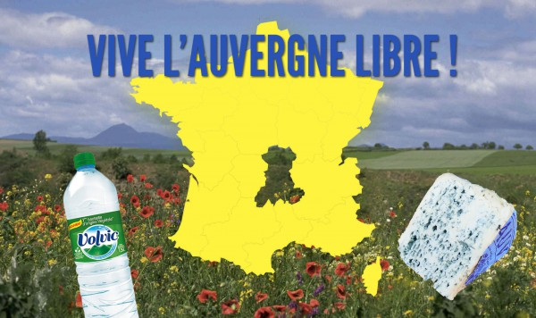

Clermont-Ferrand
Ville candidate PHP Tour 2016Clermont'ech, en bref
Partage
|
Ouverture
|
Indépendance |
Respect |

... ORGANISER LE PHP TOUR 2016.
Merci ♥

Et tout cela en ayant réussi à ne pas parler de Michelin ;-)